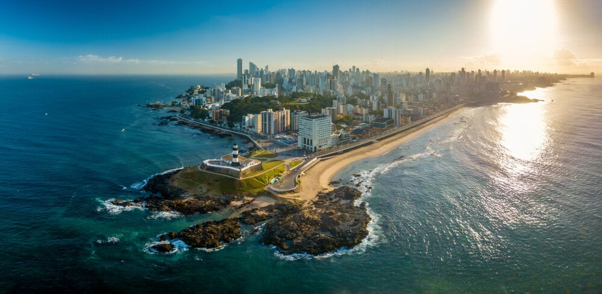

A Bahia é um estado do Nordeste do Brasil, com capital em Salvador. Foi a primeira capital do país e tem uma cultura rica, com forte influência africana. É conhecida por suas festas populares, como o Carnaval, sua culinária típica (como o acarajé) e suas belezas naturais, como praias e a Chapada Diamantina. A economia é baseada no turismo, agricultura e indústria.

voltar